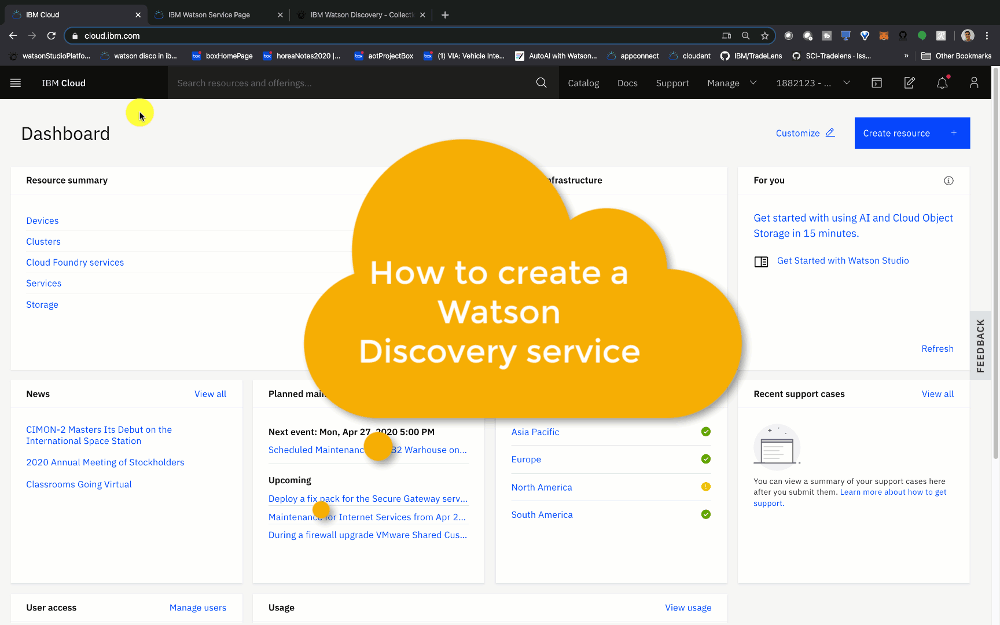

通过 Smart Document Understanding 来处理、理解和回答保单问题
本教程将提供有关使用 IBM® Watson™ Discovery 的分步指导，这是一种 AI 搜索技术，它利用自然语言处理、机器学习和异常检测方面的创新来使您能够更快、更准确地对业务文档建立索引并揭示答案。
本教程将使用一个样本保险文件，提取其中的内容，然后通过 Watson Discovery 中内置的注解工具以使用特定业务文档的不同部分来训练 Watson。这样，您就可以分解文档，省略其中的某些部分并提高查询准确性。结合使用 Watson Discovery 和聊天机器人，可以回答以前需要人工接线员才能回答的复杂问题。这种复杂的问答系统不仅减轻了团队的工作量，而且还能快速提供答案，而无需等待正常电话呼叫可能产生的等待时间，从而改善了客户体验。
本教程的目的是提取文档，询问 Watson，并直接从文档中获取以下问题的答案。我们需要回答以下问题：
-
我的保险涵盖玻璃维修吗？
-
我的保险涵盖医疗费用吗？
-
我的保险涵盖车辆损坏吗？


本教程分为四个主要步骤。
- 创建一个 IBM Cloud 帐户和一个 Watson Discovery 实例。
- 创建一个集合，然后将文档上传到 Watson Discovery。
- 使用用例训练 Watson Discovery。在此示例中，我使用一家保险公司的数据训练了 Watson Discovery，使其可以回答有关客户保单以及该保单涵盖范围的问题。
- 通过用自然语言提问来测试模型。
完成本教程后，您将了解如何使用 Watson Discovery 来根据用于馈入和训练 Watson 的文档快速注释、分析和回答复杂问题。您还将了解如何通过使用相关性训练来提高准确性，并了解如何从文档中提取有用的信息（例如关键字、位置、实体和情绪分析）。
首先，必须创建一个 IBM Cloud 帐户。在本教程中，您不需要使用信用卡，并且您的 IBM Cloud 帐户和 Watson Discovery 服务都是免费的。
以下屏幕录像显示了如何创建 Watson Discovery 实例以及如何使用应用程序界面来上传、扩充和查询数据。
创建 Watson Discovery 服务实例¶
- 登录到您的 IBM Cloud 帐户。登录后，将转到
cloud.ibm.com页面。 - 在顶部搜索栏中搜索 Discovery，然后在 Catalog Results 下单击 Discovery。
- 在 Watson Discovery 页面上，输入名称，然后选择服务的定价级别和位置。
- 选择 Lite 级别（免费级别），然后选择所需的位置。为该服务指定一个易于识别的名称。我指定的名称为
Discovery-zz。 -
单击 Create。

-
通过单击屏幕左上角的 IBM Cloud 以返回到
cloud.ibm.com页面。 -
在 Dashboard 下单击 Services，然后单击 Resource Summary。这会转到
cloud.ibm.com/resources。 -
在 Resource List > Services 下，您将看到该 Watson Discovery 实例以及您在先前步骤中指定的名称。单击该实例。这会在 IBM Cloud 中转到该实例。在这里，您可以看到 API 密钥以及其他详细信息。
-
单击 Launch Watson Discovery。
这会转到 Watson Discovery 服务主页，您可以在其中管理数据。您还可以在其中上传要分析的文档和数据。

上传数据¶
-
从 Watson Discovery 的主页中，单击 Upload your own data。
-
单击 sample-insurance.docx 文件，这是要用于训练 Watson Discovery 的样本保险文件。这个文件位于 https://github.com/IBM/virtual-insurance-assistant/blob/master/data/discovery/sample-insurance.docx。
-
上传完该文档后，您会在左上角的 Overview 选项卡中看到一个文档。您应该会看到情绪分析、实体提取和概念标记功能，这些功能是在您上传文档期间执行的。
使用 Smart Document Understanding 为文档添加注释¶
-
从 Watson Discovery 的 Overview 页面中，单击 Configure data。
-
这会转到 Smart Document Understanding 注解工具。右侧窗格显示可用于标记文档的标签。请注意，要创建自定义标签，您必须升级到 Watson Discovery 的付费版本。
-
单击纸张图标（在放大镜旁边）。这会转到单页视图。接下来，我使用
Title字段来标记标题（即Section 1），并使用subtitle字段突出显示页面上的副标题（即标题下的句子）。完成后，单击 Submit page。这样做是为了在以后向 Watson Discovery 询问保险是否涵盖玻璃或医疗费用时，Watson Discovery 可以直接使用文档中的此文本进行回答。
您会发现左下角显示
Viewing: Live predictions of lastest ML-model。这意味着，每次提交页面时，您都是在使用文档格式训练 Watson Discovery。您应该会看到，对于第 4 页，Watson Discovery 自动开始将字体较大的节标题识别为Title字段，然后将标题下的句子识别为subtitle，这样做是正确的。在这种情况下，您只需单击Submit即可。由于您要向 Watson 传达文档中正确的字段，因此您正在进行有监督的机器学习。在学习过程中，您需要监督 Watson Discovery。
-
重复此过程，直至到达最后一页（第 5 页）。
管理文档中的字段¶
-
在为所有页面添加注释后，单击 Manage fields。
-
单击 Split document on each occurrence of，然后选择 subtitle，以便按副标题拆分文档。
-
单击 Apply changes to collection，然后将更改内容添加到您上传的
sample-insurance.docx文件中。
完成上传操作后，将转到 Overview 页面。刷新浏览器，可以看到 Watson Discovery 正在拆分文档。Watson Discovery 完成操作后，您应该有 10 多个文档。这是因为您已根据副标题将原始文档拆分为多个较小的文档。这使 Watson Discovery 可以更容易地检索特定问题的答案，并使您能够实现更准确的扩充，例如情绪分析。
用自然语言询问 Watson¶
Watson 的主要优点之一是能够用自然语言回答文档中的问题。在执行此操作之前，必须将 Watson 配置为直接使用从保险文件中分析出的文本来回答问题。
-
单击侧边栏中的放大镜图标。然后单击 More options。
-
在 Passages 下，针对 Include relevant passages 选择 No。
-
在 Fields to return 的 Documents 下，选择 text。
-
针对 Number of documents to return 选择 3。
-
滚动到页面顶部，然后在 Search for documents 下，确保已选中 Use natural language。然后，向 Watson 询问以下问题：“Does my insurance cover glass repairs?（我的保险涵盖玻璃维修吗？）"单击 Run query。
-
返回答案后，Summary 处于选中状态。单击 JSON。
您应该会看到 Watson 从文档中提取相关文本，内容大概是，如果车辆丢失或损坏，保险公司将支付更换或修理车辆的挡风玻璃、天窗或窗户上的玻璃的费用。
接下来，针对“Does my insurance cover medical expenses?（我的保险涵盖医疗费用吗？）”和“Does my insurance cover damage to my vehicle?（我的保险涵盖车辆损坏吗？）”重复以上过程。
您应该会看到已从样本保险文件中检索到相关文本。可以在您的聊天机器人应用程序中直接使用此 JSON，以便 Watson 可以根据您的训练材料回答更复杂的问题。

在应用程序中集成 Watson Discovery¶
现在，您已经了解了如何使用 Watson Discovery，您可能希望在自己的应用程序中使用 Watson Discovery。一种常见的模式是使用聊天机器人，然后使用 Webhook 触发聊天机器人搜索答案。此外，如果您想使用 Watson Discovery 随附的自然语言处理功能，请查看使用 Watson Node SDK 或任何其他 Watson SDK 的示例。
如您所见，Watson Discovery 提供了内置的情绪分析、实体提取、概念标记以及其他丰富的功能，您可以在单击 Configure data 时选择这些功能。Watson Discovery 的基本要求是“Learning With Less”（简化学习）。您已经看到在 4 到 5 页的训练材料中，Watson Discovery 能够轻松地从文档中提取副标题和文本。
本教程是构建客户服务解决方案的一部分，可帮助客户管理保险索赔并获取汽车服务信息。
本文翻译自：Process, understand, and answer policy questions with smart document understanding（2020-05-21）